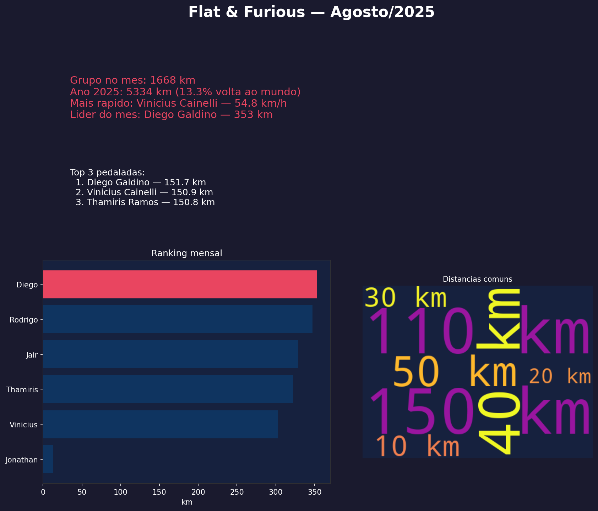

Relatório mensal — Agosto/2025
Destaques do mês
1668
km no mês
5334
km em 2025
13.3%
volta ao mundo
Mais rápido: Vinicius Cainelli (54.8 km/h)
Mais tempo pedalando: Diego Galdino (17h18m)
Infográfico

Ranking mensal
| # | Atleta | km |
|---|---|---|
| 1 | Diego Galdino | 353.2 |
| 2 | Rodrigo Bonilha | 347.4 |
| 3 | Jair de Souza Junior | 329.1 |
| 4 | Thamiris Ramos | 322.4 |
| 5 | Vinicius Cainelli | 302.9 |
| 6 | Jonathan Machado | 13.1 |
Top 3 pedaladas
- Diego Galdino — 151.7 km
- Vinicius Cainelli — 150.9 km
- Thamiris Ramos — 150.8 km
Resumo para WhatsApp
Flat & Furious — Agosto/2025
Distancia total do grupo: 1668 km
Acumulado em 2025: 5334 km (13.3% de uma volta ao mundo)
Rei/Rainha da distancia: Diego Galdino (353 km)
Mais rapido: Vinicius Cainelli (54.8 km/h)
Mais tempo pedalando: Diego Galdino (17h18m)
Top 3 pedaladas:
1. Diego Galdino — 151.7 km
2. Vinicius Cainelli — 150.9 km
3. Thamiris Ramos — 150.8 km
Curiosidades:
• Se empilhassemos garrafas de Grolsch com a distancia pedalada em 2025-08, daria pra montar 5055.1 Torres Eiffel.
• Seriam necessarios 2,224,240 passos humanos pra percorrer essa distancia.